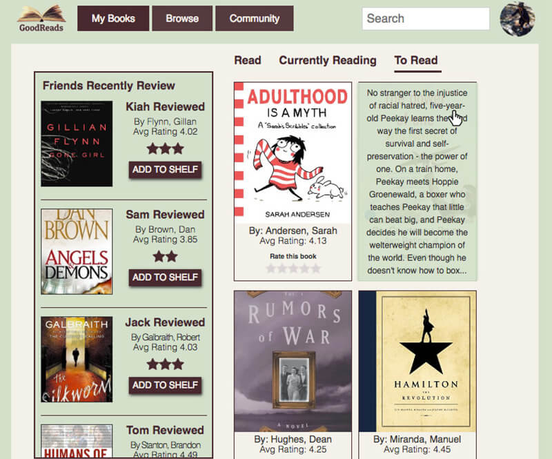
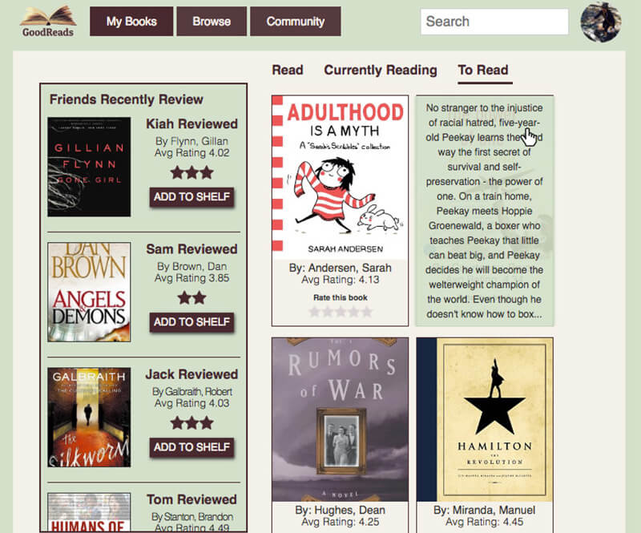

Goodreads
View Page | View Github Repo
At The Iron Yard I was given a project to redesign the Goodreads My Books page. For any book lover such as myself this was a dream come true. When researching Goodreads I discovered their mission was to help people find and share the books they love.

Technology Used
• Handlebars • HTML • Illustrator • jQuery • Photoshop • SASS
About This Project
After doing a SWOT analysis (Strength, Weakness, Opportunities, Threats) on the current My Books page from Goodreads (goodreads.com) I discovered that the amount of information they provided was both their strength and weakness. It was an asset to have the content all in one place, however the information was cluttered and laid out in an unbalanced way.
Weaknesses
- Cluttered information
- Overwhelmed by all the options on sidebar navigation
- Have two search bars
- No set brand standards
Opportunities
- Get more people to share
- More obvious way to connect you to what your friends are reviewing
- Use the art and color of the book titles to add graphics to the page
Goal of Redesign
Eliminate the clutter by taking the side navigation and moving it to the footer. This way the content will still be visible on tablet and desktop, but since it's not necessary it won't be prominate. I'll instead make the sidebar an updated view of what your friends are currently reviewing. My mission was to make the friends feature more accessible hypothesizing that this will increase the amount of books one reads.
Challenges/Problems Solved
As you can see from my mockups below my biggest challenge was figuring out the color scheme and how to layout the content. My first version I tried placing 6 books side by side and the page was so packed with information it felt like it was yelling at me. My next version I droped the books on a row from to 4 and immediately felt more relaxed. Then I played with the side bar and how to incorporate the friends feature. By my 3rd review I realized the red and yellow color was clashing. It needed a softer background, using adobe kuler's help I went with a soft green tone. From here the design flowed. I accomplished my mission of making the friends review prominent by always keeping it in sight when on a desktop or mobile. One of the things I would like to go back and add is when you're viewing on mobile you'll have a tab beside the "Read" "Currently Reading" and "To Read" that will allow you to see what your friends reviewed. One problem still to solve is I haven't built out what if the person has 70 books in their library. Right now I have a container with a set height that scrolls. My next goal is to build out an option that shows the books in sets of 10 with a next or previous button to get to other books.
Sketches


Mockups
I did these mockups in Photoshop and you can tell how my process evolved. Even though I did a wireframe it wasn't until I had images I realized just how cluttered a 6 book row was. Through the use of trial and error I was able to come to a simple clean design that properly conveys my mission.
End Result


 
